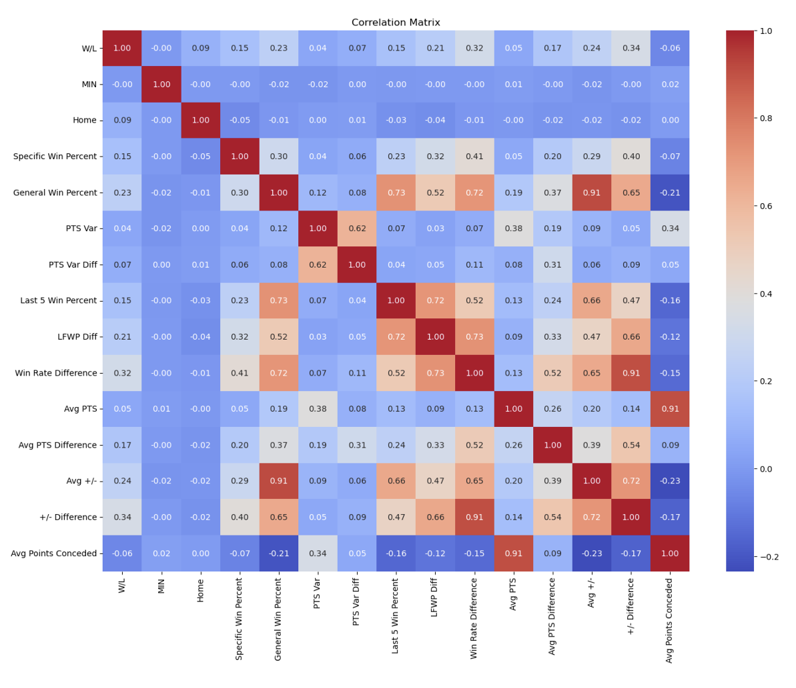
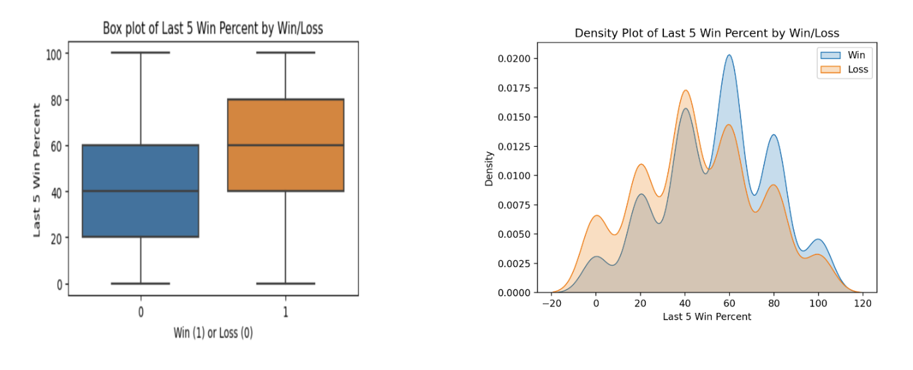
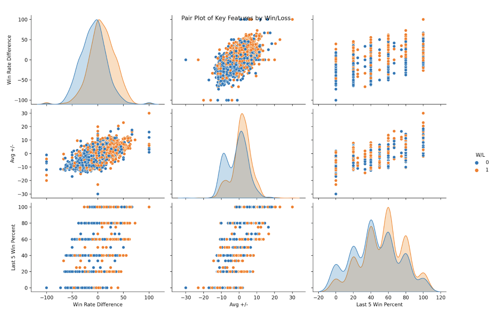

Classification of Winners in NBA Games
1. Abstract
This study aims to develop a predictive model for forecasting the outcomes of NBA games using historical game data, in this case, data from the 2023-24 Season. We divided our data into an 80/20 train test split. However, rather than randomizing the split, we split the data based on time, training the data using matchups from the first 80% of the season, and testing it on data from the remaining 20% of matchups. Of the models tested, Logistic Regression with an L1 regularization penalty demonstrated the most effectiveness producing a game prediction accuracy of over 70%. This model outperforms an unpenalized Logistic Regression, as well as Random Forest, Gradient Boosting, and Ridge Regression. Using the given NBA statistics as well as the features we engineered from the original statistics, it was found that the most influential predictors were the difference in weighted average win percentage between the two opposing teams, whether the team was playing at home, the average points scored by both opposing teams, the difference in points conceded by each team, the difference in variance of points scored by each team, and the difference in average FG% of each team. The results suggest that teams with better historical records (particularly records with many recent wins), stable scoring patterns, good scoring ability, and strong defenses are likely to win.
2. Introduction
Our Problem
In competitive sports, both fans and teams care about the performance of their respective teams. With the recent legalization and popularization of American sports betting, the outcome of a game could mean the gain or loss of millions of dollars, not to mention the impact of each game to their respective sports. The goal of this study is to build a model to predict whether a team will win a game based on historical data from not only the individual team but the entirety of the NBA.
Variables of the Study
Given these variables, the study seeks to explore their interrelationships and assess their potential impact on game outcomes. The relationships identified during this exploratory analysis will inform the subsequent analysis and development of more sophisticated features.
| Variables | Categorical vs Numerical | Description |
|---|---|---|
| Team | Categorical | Team Name |
| Match Up | Categorical | Description of the meeting teams |
| Game Date | Categorical | Date of the game (MM/DD/YYYY) |
| W/L | Categorical | Win or Loss |
| MIN | Numerical | Minutes Played |
| PTS | Numerical | Points Scored |
| FGM | Numerical | Field Goals Made |
| FGA | Numerical | Field Goals Attempted |
| FG% | Numerical | Field Goal Percentage |
| 3PM | Numerical | 3-Point Shots Made |
| 3PA | Numerical | 3-Point Shots Attempted |
| 3P% | Numerical | 3-Point Shot Percentage |
| FTM | Numerical | Free Throws Made |
| FTA | Numerical | Free Throws Attempted |
| FT% | Numerical | Free Throw Percentage |
| OREB | Numerical | Offensive Rebounds |
| DREB | Numerical | Defensive Rebounds |
| REB | Numerical | Total Rebounds |
| AST | Numerical | Assists |
| STL | Numerical | Steals |
| BLK | Numerical | Blocks |
| TOV | Numerical | Turnovers |
| PF | Numerical | Personal Fouls |
| +/- | Numerical | Point Differential |
The raw dataset was found to be generally well-structured, with nearly all columns containing complete data and no missing values. A single instance was identified where a team did not attempt any free throws in a game; in this case, an imputed value was assigned to ensure consistency with the analysis requirements. Given the overall completeness and quality of the data, minimal preprocessing and data wrangling were required.
3. Exploratory Analysis
The initial step of exploratory analysis involved examining the already existing variables to identify those that are significant and could contribute to feature engineering. A preliminary look at a correlation heatmap confirms the expectation that points (PTS) and field goals made (FGM) would be strong predictors. Interestingly, field goal percentage (FG%), defensive rebounds (DREB), and assists (AST) also demonstrated notable correlation, suggesting their potential relevance.
Following our initial analysis, new variables were engineered to capture additional patterns within the data: home advantage, matchup win percentage, general win percentage, points variation, and points conceded. A correlation matrix was used to visualize these engineered variables, the differences between matches, and their relationships. Strong correlations once again indicate that these variables may serve as contributing predictors in the predictive models. This exploratory analysis provides a framework for our final variable selection with which the models will be tested.

With the evaluation of the correlation matrix, one of the variables that piqued interest was the ‘Last 5 Win Percent’ feature as this feature resulted in a correlation percentage of over 70% with both the ‘Last Five Win Percentage Difference’ and, most interestingly, the ‘General Win Percentage’.

This trend suggests that a team’s latest five games are a strong indicator of the probability of winning their next match. Observing this, we decided to allocate more weight to the results of a team’s most recent games compared to their earlier games. The weight is defined using an exponentially decreasing sequence, where the weight assigned to each game is calculated as:
\[ w_j = \frac{\alpha^{n-j}}{\sum_{k=1}^{n-1}\alpha^{n-k}} \]
Here, \(w_j\) represents the weight for game j, α = 0.2 is the decay factor, n is the total number of prior games, and j is the position of the game in the sequence, with j=1 corresponding to the earliest game and j=n the most recent. This approach ensures that recent games have a proportionally greater impact on the weighted win percentage while older games contribute less influence.
Based on an exploration of all the features of interest, a deeper consideration of the correlation between 3 specific features was conducted. The correlation between ‘Win Rate Difference’, ‘Avg +/-’, and ‘Last 5 Win Percent’ was found to be higher than random chance would suggest.
The figure above shows a visual representation of the correlation between the three features and with further analysis we can deduce a percentage of correlation between said three features.

The correlation between ‘Win Rate Difference’ and ‘Avg +/-’ suggests a team with a better win rate is typically more dominant in their games. This indicates higher offensive skill is more indicative of a team’s likelihood of winning. For this reason, we gave more importance to the points scored rather than any of the rebounds, blocks, or overall defensive metrics.
4. Analysis
To develop a predictive model for NBA game outcomes, a new set of features was engineered and used to create a comprehensive dataset for training and testing. The dataset was split into two parts: the first 80% of the season’s games were used for training the models, while the remaining 20% were reserved for testing. This separation ensured that the models were evaluated on data they had not seen during training, preserving the validity of the results.
Several machine learning models were tested, including Logistic Regression with no penalty, Logistic Regression with an L1 penalty, Ridge Regression, Random Forest, and Gradient Boosting. Among these, Logistic Regression with an L1 penalty demonstrated the highest predictive accuracy, establishing it as the best-performing model in our analysis.
The L1 penalty in our Logistic Regression applies a penalty to the coefficients of a linear model, which eliminates less relevant features by shrinking their coefficients. This approach enables the model to focus on the most informative predictors while reducing complexity, thus preventing overfitting
| Variables | Description |
|---|---|
| Home | Binary variable indicating if a given team is playing at home (1) or away (0) |
| Diff Weighted GWP | Difference of weighted win percentage (as described previously) of the selected team and their opponent |
| AVG Points | Average number of points scored per game |
| Opp Avg Points | Average number of points conceded per game |
| Diff Avg Points Conceded | Difference in average points conceded per game of the two given teams |
| Diff PTS Var | Difference in the variance of each teams points scored per game |
| Diff of Avg Points Scored | Difference in the means of each teams points scored per game |
The final features used to train our model are described in the table above. These features were selected to capture critical aspects of team performance and competitiveness. The difference in weighted general win percent is our most significant feature. The Difference in Weighted General Win Percentage (Diff Weighted GWP) is important because it provides a nuanced measure of a team’s overall performance and momentum leading into a matchup. By weighting recent games more heavily, the Diff Weighted GWP accounts for a team’s current form. This is critical because teams often perform differently at various points in a season due to factors like injuries, strategy adjustments, or player fatigue. Diff Weighted GWP blends both a team’s season-long consistency and its short-term fluctuations. By looking at the difference in weighted win percentages between two teams, the metric highlights which team has been performing better in the context of recent games. This comparative analysis directly informs which team should be favored under “all things being equal” scenarios.
The Diff PTS Var measures the difference in the variance of points scored between teams, reflecting consistency. Teams with lower variance are more reliable and stable, while streakier teams with higher variance are less consistent and more likely to lose. This metric highlights a team’s stability, making it a strong predictor of outcomes. The rest of the features are general metrics of team performance on both the offensive and defensive end. When examined in relation to each other, they can suggest which team has a competitive advantage on both ends of the court.
It is a widely understood principle in sports that the home team has a competitive advantage. The dataset was constructed by aggregating historical data for each team, emphasizing recent performances through exponentially decreasing weights, and calculating performance differences between opposing teams. This structure ensured that the model prioritized recent trends, which are often more indicative of future outcomes.
5. Results
Summary
In this analysis, the performance of several different machine learning models to predict the outcome of each NBA game was evaluated. Among the models tested, Logistic Regression for classification was the most accurate, achieving an accuracy of 70.37%, this is due to the L1-penalty’s ability to penalize the less informative predictors and selecting only the most relevant features for the model. The next best model was Random Forest, with an accuracy of 67.8%. An unpenalized logistic model had an accuracy of 67.28%. Ridge Regression had a slightly lower accuracy of 67.08%, and Gradient Boosting exhibited the lowest predictive accuracy at 60.3%.
An analysis of feature importance revealed that the difference in weighted general win percentage between the two teams was the most predictive variable, showing a correlation of 0.324 with game outcomes. Within the Logistic Regression model, the L1 penalty allowed us to identify features that were labeled as influential. These influential features included the difference in win percentage, the variability of points scored per game, and the difference in average points conceded by each team. These findings highlight the significance of team consistency, scoring variability, and defensive strength in predicting game outcomes.
Interpretation
Teams with a stronger historical record of wins are statistically more likely to secure future victories, especially when competing against teams with lower win rates. Consistency in scoring further enhances a team’s probability of success, as it indicates reliability in offensive performance. Similarly, strong defensive capabilities, quantified by fewer points conceded, serve as a critical determinant of a team’s overall competitiveness.
To improve predictive accuracy, our model incorporates a weighted approach to these factors, assigning greater importance to recent games. This recency-weighted framework reflects the intuition that recent performance trends, such as momentum or short-term adjustments in strategy and form, are more predictive of near-term outcomes. By combining these weighted metrics with additional performance indicators, our model captures both the long-term stability and short-term dynamics of team performance, providing a robust and data-driven foundation for outcome prediction.
6. Conclusions
Challenges of the Study
One of the most significant challenges in our project was identifying how to maximize the predictive power of our model using the available data. Translating what makes a basketball team “good” into meaningful numerical predictors was a complex process that required both domain knowledge and statistical reasoning. Generating features that captured relevant aspects of team performance was the first hurdle, followed by the task of determining which combination of features would yield the most accurate predictions.
Balancing model complexity with the risk of overfitting was another critical challenge. Overloading the model with weakly correlated or redundant features threatened to diminish its generalizability. To address this, we tested multiple models and feature sets to identify the optimal balance. Additionally, we experimented with limiting the influence of older games in the dataset, which reinforced our hypothesis that placing greater weight on recent games significantly improved the model’s ability to capture momentum and current team form.
Recommendations for the Future
Looking ahead, more attention should be given to fully exploring the potential of the original predictors before diving into feature engineering. While feature engineering was a critical part of our analysis, many of the derived features offered limited improvement over the raw data. A more systematic approach to evaluating engineered features could save time and resources in future projects.
We also recommend expanding the scope of hyperparameter optimization across models. Exploring a broader range of regularization parameters, penalty terms, and model-specific hyperparameters (e.g., tree depth for Random Forest) could uncover improvements in accuracy. Furthermore, incorporating advanced techniques like cross-validation or ensemble methods might enhance the robustness and predictive power of the model.